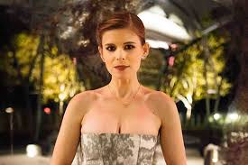

Kevin Spacey como Francis J. "Frank" Underwood, um democrata do 5º distrito congressional da Carolina do Sul. Ele é líder do partido no Congresso na primeira temporada, o vice-presidente dos Estados Unidos na segunda temporada, o 46.º presidente dos Estados Unidos nas temporadas de três a cinco e o primeiro-cavalheiro dos Estados Unidos na quinta temporada.
Robin Wright como Claire Underwood, esposa de Frank. Ela dirige a Iniciativa Água Limpa, uma organização não governamental, na primeira temporada, antes de desistir de se tornar a segunda-dama dos Estados Unidos na segunda temporada. Ela então se torna embaixadora dos Estados Unidos nas Nações Unidas na terceira temporada e primeira-dama dos Estados Unidos nas temporadas três a cinco, atuando brevemente como presidente dos Estados Unidos na quinta temporada antes de se tornar vice-presidente dos Estados Unidos e depois 47.ª presidente da Estados Unidos no final da temporada.
Kate Mara como Zoe Barnes, uma repórter do jornal The Washington Herald que, desesperada por uma grande história, faz um acordo com Underwood para informações sobre o executivo e legislativo.
Corey Stoll como Deputado Peter Russo, um congressista ítalo-americano da Pensilvânia. Ele é divorciado, tem dois filhos e tem um caso com sua assistente.
Michael Kelly como Doug Stamper, o Chefe de Gabinete de Underwood.
Kristen Connolly como Christina Gallagher, uma obstinada assistente executiva que está tendo um caso com Russo.